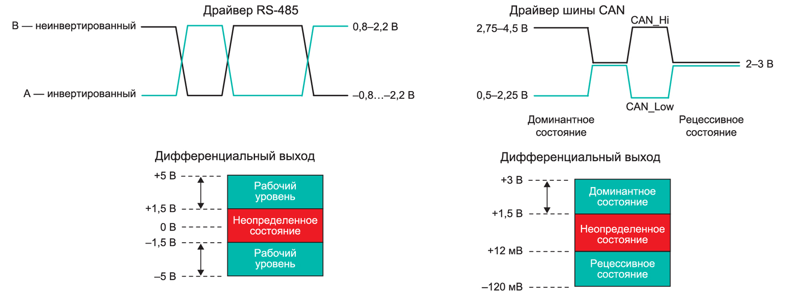
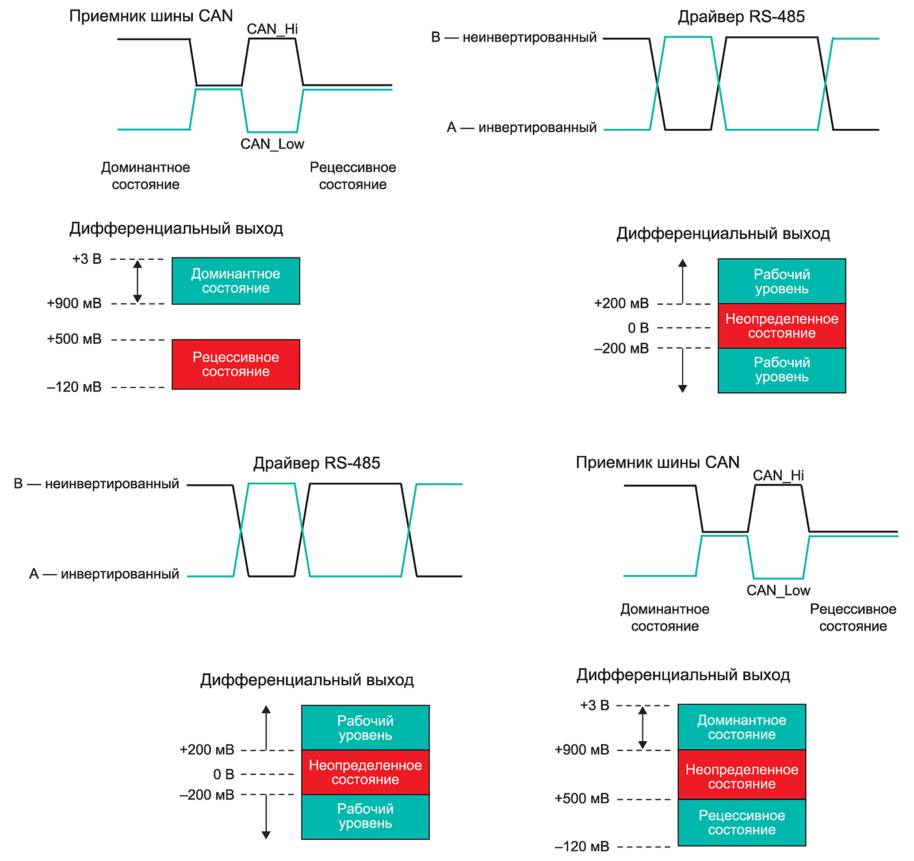
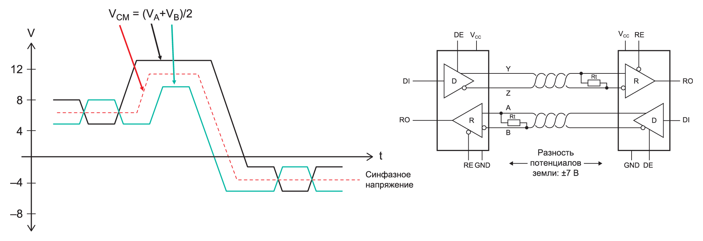
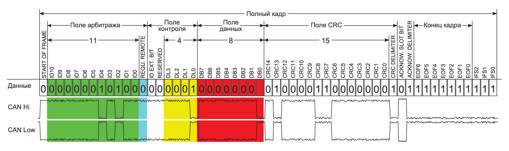

Оба интерфейсных протокола — RS 485 (стандарт физического уровня для асинхронного интерфейса) и CAN (Controller Area Network — стандарт промышленной сети, ориентированный, прежде всего, на объединение в единую сеть различных исполнительных устройств и датчиков) — существуют еще с середины 1980 х годов, когда они были впервые представлены в качестве стандартов для организации каналов связи. Долгое время эти интерфейсы развивались сами по себе, не касаясь друг друга. Но прошло время, и ситуация начала меняться. Почему? Разобраться в этом нам поможет небольшая дискуссия, проведенная в рамках статьи.
В отличие от предыдущих стандартов физического уровня, в частности RS‑423, RS‑422 и RS‑232, появление RS‑485 стало поистине эволюционным этапом. Системы связи с поддержкой данного стандарта представляют собой многоточечную систему и имеют до 32 узлов в одиночной системе (с репитерами до 256).
Примерно в то же время, когда создавались упомянутые выше интерфейсы, используемые в таких приложениях, как компьютерные клавиатуры и мыши, принтеры и оборудование для промышленной автоматизации, интерфейс CANbus проектировался как автомобильная коммуникационная платформа, предложенная Робертом Бошем (Robert Bosch), владельцем компании Robert Bosch GmbH, для снижения стоимости производства авто. Эта шина стала альтернативой традиционным толстым многожильным автомобильным кабелям и упростила их прокладку благодаря применению многоузловых шин. Впервые представленный в модели BMW‑850 в 1986 году, автомобильный CAN-интерфейс сэкономил в ней более 2 км различных проводов! Кроме того, было значительно сокращено количество разъемов, а оценочная экономия веса машины составила 50 кг [1]. Так сложилось, что RS‑485 был предназначен для нужд промышленного рынка, а CAN — для автомобильного и транспортного сегмента, но постепенно он нашел место и в приложениях, скажем так, вне своей юрисдикции, то есть в автомобильной и аэрокосмической отраслях.
Благодаря своей высокой устойчивости при эксплуатации в непростых условиях, характерных для автомобильных приложений, возможностям защиты от сбоев и уникальной обработке сообщений CANbus теперь используется там, где прежде никогда не был распространен. Нынешние рыночные тенденции демонстрируют все более широкое внедрение CANbus, порой заменяющего RS‑485 в традиционных индустриальных программах.
Согласно рыночным отчетам, применение CANbus увеличивается в разы, что является исключительным фактом для рынка интерфейсов. И хотя отчеты не разделяют промышленные и автомобильные рынки, многие согласны с тем, что промышленные рынки составляют около 20–30% от общего объема выпускаемой продукции. Рост использования интерфейсов в автомобильной промышленности можно объяснить распространением электроники, установленной сегодня в автомобилях. Современные автомобили имеют сложные микропроцессорные системы, необходимые для таких функций, как резервные камеры, автоматическая парковка, информационно-развлекательные системы, распознавание слепых зон и многое другое. Появление данных подсистем связано с увеличением числа датчиков и микроконтроллеров в авто, требующихся для обработки информации от всех сложных систем, действующих внутри машины. Еще в 1990‑х годах многие автопроизводители начали переход от ручного переключения передач к автоматическим, а позже и к коробкам передач с электронным управлением, основанным на поступающих на микроконтроллер данных о скорости, положении дроссельной заслонки и информации от барометрических датчиков. Сегодня на одном транспортном средстве можно насчитать свыше 100 датчиков и микроконтроллеров, многие из которых общаются по шине CAN. Даже полностью электрический автомобиль Tesla S имеет внутри 65 микроконтроллеров [2].
На индустриальном рынке также наблюдается рост внедрения интерфейса CAN. Промышленные CAN-приложения имеют достаточно широкий охват и устанавливаются в самых разнообразных приложениях — от коммерческих беспилотных летательных аппаратов (дронов) до элементов управления лифтом и даже газонокосилками коммерческого назначения. Поставщики микросхем признают этот факт и разрабатывают продукты для удовлетворения все возрастающей потребности в CAN вне традиционного рынка автомобильной промышленности. Другой фактор, способствующий увеличению применения CAN в индустриальной сфере, — это переход многих инженеров‑автомобилестроителей в промышленный сегмент, где они, естественно, применили свой опыт работы с шиной CAN и ее уникальные преимущества. Еще одна причина внедрения интерфейса CAN на промышленном рынке связана с присущей ему отказоустойчивостью и способностью эффективно обрабатывать кадры сообщений на многоузловой шине.
Для того чтобы объяснить преимущества CAN по отношению к RS‑485, лучше всего оценить сходства и различия между двумя стандартами — ISO 11898-2-2016 [3] и TIA/EIA‑485 (сейчас действует ANSI TIA/EIA‑485‑A ) соответственно. Оба стандарта определяют уровни приемопередатчиков, которые представлены на диаграмме (рис. 1) для стороны передачи.
Оба протокола имеют дифференциальный выходной сигнал. Выход RS‑485 представляет собой классический дифференциальный сигнал, в котором один сигнал является инвертированным, или зеркальным отражением другого. Выход A — неинвертирующая линия, а выход B — инвертирующая линия. Дифференциальный диапазон +1,5…+5 В равен логической 1 или значению, а пределы –1,5…–5 В — логическому 0 или пробелу. Сигнал с уровнем, лежащим в диапазоне –1,5…+1,5 В, считается как неопределенный. Важно отметить, что когда RS‑485 не используется, то его выход пребывает в состоянии высокого импеданса.
У шины CAN выходной дифференциальный сигнал несколько иной. Так, здесь предусмотрено два выхода в виде CANH- и CANL-линий данных, которые являются отражением друг друга (рис. 1) и представляют собой инвертированную логику. В доминирующем состоянии (бит нуля, используемый для указания приоритета сообщения) CANH-CANL определяются как 0, когда напряжение на них составляет +1,5…+3 В. В рецессивном состоянии (1 бит и состоянии незанятой шины) сигнал драйвера определяется как логическая 1, когда дифференциальное напряжение находится в диапазоне –120…+12 мВ или в приближении к нулю.

Рис. 1. Сравнение допустимых уровней выходных дифференциальных сигналов драйверов RS 485 и CAN
Для стороны приемника стандарт RS‑485 определяет входной дифференциальный сигнал, когда он находится в пределах ±200 мВ…+5 В. Для CAN входной дифференциальный сигнал составляет +900 мВ…+3 В, а рецессивный режим находится в диапазоне –120…+500 мВ. Когда шина пребывает в режиме ожидания или когда не загружена и трансивер находится в рецессивном состоянии, напряжения на линиях CANH и CANL должны быть в рамках 2–3 В.
Как RS‑485, так и CAN имеют необходимый технологический запас по уровням распознавания для работы в приложениях, в которых сигнал может быть ослаблен из-за характеристик и качества используемого кабеля (экранированного или неэкранированного) и длины кабелей, что может сказаться на емкости подключения системы. Для сравнения допустимых уровней входных дифференциальных сигналов со стороны приемника RS‑485 и CAN следует обратиться к рис. 2.

Рис. 2. Сравнение допустимых уровней входных дифференциальных сигналов для RS 485 и CAN
со стороны приемника
Кроме того, оба стандарта имеют нагрузочные согласующие резисторы с одинаковым значением 120 Ом, устанавливаемые на концах линии. Эти резисторы необходимы, чтобы обеспечить согласование линии связи по волновому сопротивлению линии передачи и тем самым избежать отражения сигнала. Другие технические характеристики, такие как скорость передачи данных и количество допустимых узлов, носят информационный характер, а не являются строгими требованиями, подлежащими обязательному выполнению. Для удовлетворения нужд рынка большинство выпускаемых RS‑485- и CAN-трансиверов превышает стандартную скорость передачи данных и допустимое количество узлов. Например, интегральный полудуплексный трансивер RS‑485 индустриального класса из микросхемы MAX22500E [4] от компании Maxim достиг скорости в 100 Мбит/с. А новый стандарт CAN-FD, ISO 11898-2:2016, хотя и определяет временные характеристики для скоростей 2 и 5 Мбит/с, но не ограничивает скорость передачи данных значением 5 Мбит/с. CAN-трансиверы превысят требования своего стандарта так же, как и приемопередатчики RS‑485. Что касается устойчивости к синфазному сигналу, параметр CMR (Common-Mode Range, диапазон синфазных напряжений) для RS‑485 составляет –7…+12 В и для CAN –2…+7 В.
Однако многим приложениям требуется более высокая производительность в части CMR, что относится к обоим типам рассматриваемых интерфейсов. Это связано с тем, что они в основном используются для многоузловых шин, а их узлы могут иметь источники питания с разными силовыми трансформаторами или кабели находиться в непосредственной близости к оборудованию с достаточно мощными переменными электромагнитными полями, способными повлиять на заземление между узлами системы. Таким образом, учитывая множество самых различных приложений, работающих в жестких условиях индустриальной среды, часто требуется более высокая устойчивость CMR, выходящая за пределы стандартных уровней –7…+12 В.
Для решения этой проблемы существуют приемопередатчики RS‑485 и CAN нового поколения, которые имеют значительно более широкий диапазон устойчивости к воздействию синфазной помехи, а именно до ±25 В. На диаграмме, приведенной на рис. 3, представлен флуктуирующий диапазон синфазного сигнала для приемопередатчика RS‑485. Несмотря на то, что сигнал синфазного напряжения растет вверх и вниз, пока уровень синфазного напряжения (VCM) находится в пределах допустимого диапазона, он не влияет на дифференциальный сигнал шины и приемник способен принимать и распознавать сигнал на линии без ошибок. Диаграмма на рис. 3 показывает допустимый диапазон изменения синфазного сигнала для RS‑485.

Рис. 3. Пояснение параметра CMR на примере трансивера RS 485
Еще одна особенность, присущая как приемопередатчикам CAN, так и RS‑485, — защита от сбоев. Устройства с защитой от ошибок имеют внутреннюю цепь защиты от воздействия повышенного напряжения на выходы драйвера входа приемника. Это необходимо, чтобы уберечь устройства от случайных коротких замыканий между локальным источником питания и линиями передачи. В данном направлении микросхемы компании Maxim занимают лидирующее положение в отрасли. Они, как, например, широко используемая и в настоящее время MAX13041, гарантируют уровни защиты от сбоев до ±80 В и даже с некоторым дополнительным запасом до полного пробоя и выхода цепи защиты из строя [5]. Причем важно то, что этот уровень защиты гарантируется независимо от того, подано питание на трансивер или он обесточен.
Среди основных причин того, почему в индустриальных приложениях предпочтение отдается CAN-, а не RS‑485‑трансиверам, следует назвать и способ обработки сообщений на шине. В мультиузловой системе, используемой для общения с микропроцессором RS‑485, могут быть случаи, когда несколько сообщений отправляются одновременно. Что иногда приводит к коллизиям, иначе известным как конкуренция. Если подобное происходит, состояние шины может оказаться неверным или неопределенным, что вызовет ошибки данных. Кроме того, такая конкуренция может повредить или ухудшить параметры производительности, когда несколько трансиверов RS‑485 на шине находятся в одном, а один приемопередатчик — в противоположном состоянии. Тогда от одиночного передатчика RS‑485 может потребоваться довольно значительный ток, который, вероятно, вызовет отключение микросхемы из-за превышения максимально допустимой температуры или даже приведет к необратимому повреждению системы. Здесь CANbus по сравнению с протоколом RS‑485 имеет большое преимущество. С помощью CANbus удается разрешить проблему передачи нескольких сообщений на линии путем ранжирования каждого из них.

Рис. 4. Формат кадра передачи данных CAN
Перед тем как приступить к работе по проектированию системы, инженеры назначают разные уровни задач. Ранее упоминалось, что CAN имеет доминантное и рецессивное состояние. Во время передачи сообщение с более высоким назначенным доминантным состоянием «выигрывает» конкуренцию и будет продолжать передачу, в то время как другие узлы с более низким приоритетом будут видеть доминирующий бит и прекратят передавать данные. Этот метод называется арбитражем, где сообщения приоритетны и принимаются в порядке их статуса. Узел, который проигрывает в результате более низкого назначенного приоритета, повторно отправит свое сообщение, когда его уровень окажется доминирующим. Это продолжается для всех узлов, пока они не выполнят передачу. На рис. 4 более подробно рассмотрен формат кадра данных сообщения в протоколе CAN. Эта временная диаграмма и таблица 1 наглядно демонстрируют, где и как происходит арбитраж.
Таблица 1. Формат кадра передачи данных в протоколе CAN
|
Наименование поля |
Длина в битах |
Описание |
|
SOF (Start of frame) |
1 |
Начало кадра |
|
Identifier, выделено зеленым |
11/29; 12/32 |
Предоставляет приоритет сообщения (11 или 29 бит |
|
RTR (Remote transmission request), выделено голубым |
1 |
Удаленный запрос передачи |
|
IDE (Identifier extension bit) |
1 |
Битидентификатор служит для идентификации расширенного формата |
|
r0 |
1 |
Зарезервированный бит для будущего расширения протокола |
|
DLC (Data Length Code), выделено желтым |
4/8/9 |
Код длины данных (4 бит для стандартной CAN, 8 или 9 бит для CANFD) |
|
Data Field, выделено красным |
0–64 (0–8 байт); |
Поле данных, передаваемые данные |
|
CRC (Cyclic redundancy check) |
15 |
Контрольная сумма, используется для обнаружения ошибок |
|
CRC Delimiter |
1 |
Бит — разграничитель CRC |
|
ACK (Acknowledgement) slot |
1 |
Область подтверждения. Доминантный бит при сообщении об ошибке; рецессивный бит при отказе от сообщения об ошибке |
|
ACK Delimiter |
1 |
Битразграничитель подтверждения |
|
EOF (End of frame) |
7 |
Конец кадра |
Арбитраж разрешается во время передачи идентификатора, пример данной ситуации показан в таблице 2. Вне зависимости от топологии сети, даже с новым стандартом CAN-FD, фаза арбитража ограничена скоростью передачи 1 Мбит/с. Но фаза поля данных ограничена только характеристиками приемопередатчика, то есть она может проходить намного быстрее.
Таблица 2. Узел 3 в результате арбитража уступает шину узлу 1 на третьем бите
|
|
|
Биты идентификатора (Поле арбитража) | ||||||||||
|
|
Стартовый бит |
10 |
9 |
8 |
7 |
6 |
5 |
4 |
3 |
2 |
1 |
0 |
|
Узел 1 |
0 |
0 |
0 |
0 |
0 |
0 |
0 |
0 |
0 |
1 |
1 |
1 |
|
Узел 3 |
0 |
0 |
0 |
0 |
0 |
0 |
0 |
0 |
1 |
Остановка передачи | ||
Помимо арбитража, уровень канала передачи данных (уровень 2 модели OSI) также способствует повышению надежности всей системы CAN в целом. На этом уровне сообщение кадра неоднократно проверяется на предмет точности и наличия ошибок. Если сообщение получено с ошибками, отправляется кадр ошибки. Он содержит флаг ошибки (Error Flag), который состоит из 6 бит одинакового значения (таким образом нарушая правило вставки битов) и разграничителя ошибки (Error Delimiter), состоящего из 8 рецессивных бит.
Разграничитель ошибки предоставляет определенное пространство, где другие узлы шины могут отправлять свои флаги ошибки после того, как сами обнаружат первый флаг ошибки. С точки зрения уровня сообщений циклическая проверка избыточности (CRC) защищает информацию в кадре добавлением избыточных контрольных битов в конце передачи, которые затем проверяются на принимающей стороне. Если они не совпадают, возникает ошибка CRC. Затем следует контроль фрейма (кадра), который определяет правильность структуры, проверяя битовые поля на фиксированный формат и размер кадра бит-разделителя SOF, EOF, ACK и CRC.
С точки зрения битового уровня существует три проверки на наличие ошибок: подтверждение, контроль бит и набивка бит. Ошибки подтверждения обнаруживаются, когда передатчик не считывает доминантный бит ACK (0). Это указывает на ошибку передачи, обнаруженную получателями, что означает, что ACK был поврежден или не было приемников. Бит-мониторинг проверяет уровень шины для каждого узла для отправленных и принятых бит. Битовая подстановка — метод, который «наполняет» или вставляет дополнительный противоположный бит, когда пять из тех же самых бит встречаются последовательно. Противоположный бит помогает различать кадры ошибок и биты EOF. На принимающей стороне дополнительный бит удаляется. Если шестой бит такой же, как и предыдущие пять, тогда ошибка обнаруживается всеми CAN-узлами и отправляются кадры ошибок. В этом случае оригинальное сообщение необходимо передать повторно, пройдя, естественно, через арбитраж, если на линии есть конфликт.
Подводя итог дискуссии, можно сделать краткий вывод: если рассматривать системы «точка-точка», требующие высокой скорости обмена данными, то здесь, благодаря более высокой скорости и простому кадру, несомненно в выигрыше оказывается интерфейс RS‑485. Но в мультиузловых системах с возможными коллизиями и на скоростях не выше 1 Мбит/с явное преимущество остается за CAN, особенно при организации связи в системе оборудования, работающего в жестких условиях индустриальной среды, в широком диапазоне рабочих температур (для упомянутого ранее MAX13041 –40…+125 °С) и при высоком уровне внешних воздействий, не говоря уже о его «родном поле деятельности» — автомобильной и транспортной сферах.
Как известно, многие системы либо подвергаются воздействию электромагнитных помех, либо страдают от ошибок обслуживающего персонала, который может по невнимательности подать питающее напряжение на линии связи. В этом отношении трансиверы CAN отличаются высокой надежностью, устойчивостью к воздействию значительных разрядов статического электричества и хорошим уровнем защиты от сбоев. Относительный недостаток CAN, а именно то, что передачу слушают все приемники на линии, легко устранить, используя имеющийся в составе кадра передачи идентификатор, да и большой беды в этом, как правило, нет.
Благодаря таким возможностям CAN, как арбитраж, проверка сообщений об ошибках, улучшенная пропускная способность и большее поле данных, легко понять привлекательность CANbus по сравнению с RS‑485 на рынке промышленного оборудования средств автоматизации. CAN-системы могут уделять первоочередное внимание важности сообщений кадров и надлежащим образом обрабатывать критические. Все это позволяет использовать трансиверы CAN, в том числе и от компании Maxim, в аппаратуре самого широкого назначения, а для различных областей применения данная компания также предлагает высокоэффективные интерфейсы с гальванической развязкой [6].